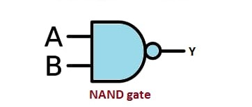
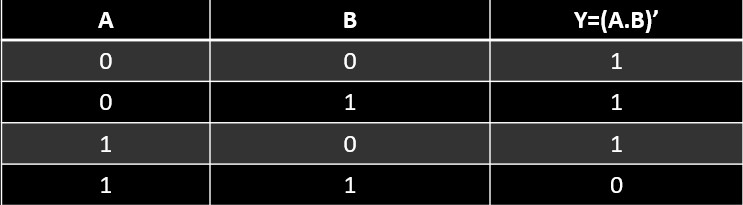

NAND GATE
In digital electronics, a NAND gate (NOT-AND) is a logic gate which produces an output which is false only if all its inputs are true; thus its output is complement to that of an AND gate. A LOW (0) output results only if all the inputs to the gate are HIGH (1); if any input is LOW (0), a HIGH (1) output results.
Logic Diagram:
Truth Table:
